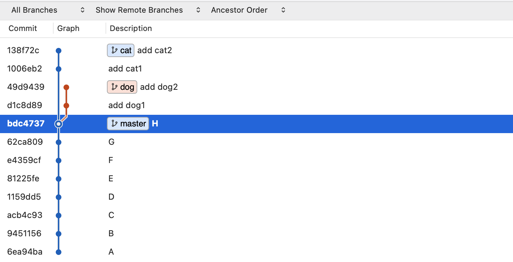
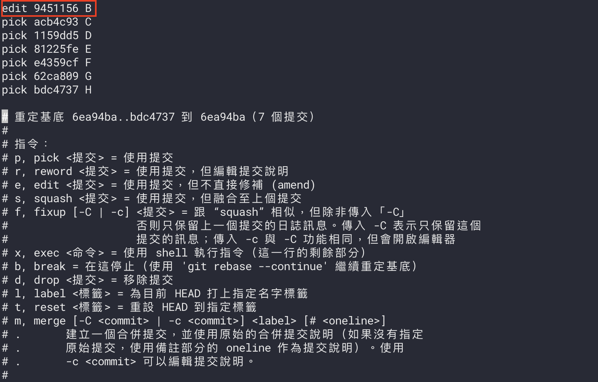
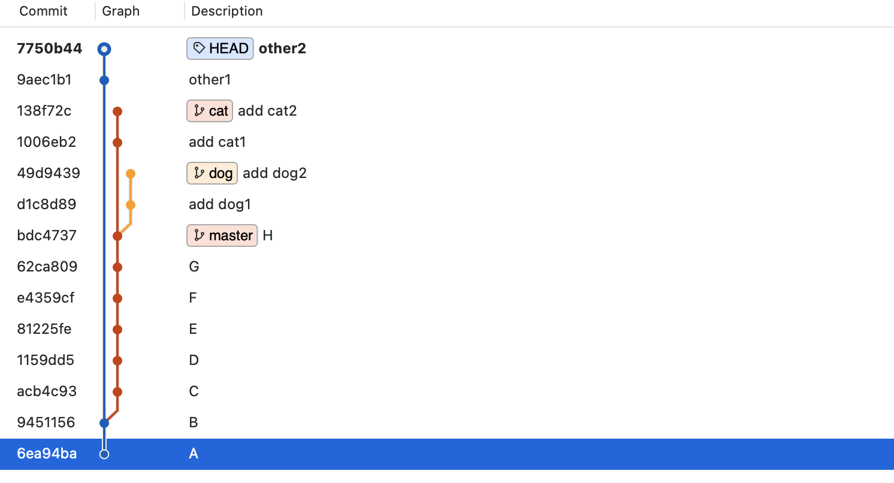
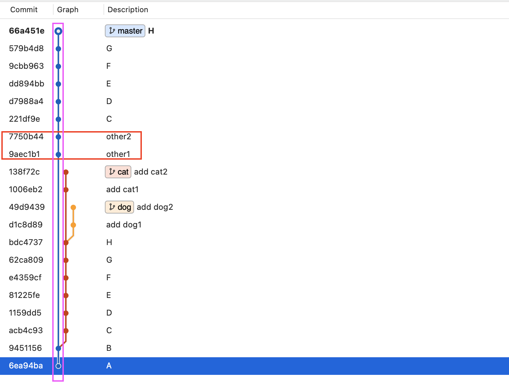

像在改寫歷史一樣。
簡述
假設這是目前的紀錄：

附註：這邊是故意用比較複雜的紀錄來當範例，後面會解釋原因。
現在我想要在 B 和 C 之間插入新的 commit 紀錄，那一樣可以用 rebase 的方式來做，作法會跟 Git Rebase－把單個 commit 拆成多個 commit 有點類似，流程會是：
- 使用 rebase
edit功能來停留在B這個紀錄點 - 接著改寫
B以後的 commit 紀錄
原本拆 commit 時是改寫 B 自己的紀錄，現在只是改成在 B 以後新增其他筆紀錄而已，所以接著來直接下指令吧！
1 | git rebase -i HEAD~7 // 進入 HEAD ~ 第一個 commit 位置的 rebase |
進入互動模式，把 B 設為 edit：

存檔以後離開，Git 就會自動停在 B 的紀錄點：
1 | pick e4359cf F |
這時候就可以在這裡建立其他的 commit 紀錄：
1 | git commit -am 'other1' // 第一筆新的 commit |
新增完的狀態會像這樣：

雖然目前看起來有點亂，不過等一下完成後就會比較正常了。
結束 rebase：
1 | git rebase --continue |
附註：因為是改寫以前的紀錄，所以這邊有很大的機率會出現 conflict，這部分在自行處理掉即可。
完成後的結果如下：

因為這邊比較亂所以有特別框起來標注，可以看到 master 上（粉色框框）的紀錄在 B 以後多了 other1 和 other2 的新紀錄（紅色框框），就跟我們想要的結果是一樣的。
而這邊故意用了一個比較複雜的範例是有原因的，我想讓你明白如果去改寫前面的紀錄，會對其他的分支造成什麼影響？
仔細想想看我們剛剛的行為，如果我們真的改寫了過去，那直覺來說也會影響到 cat 和 dog 這兩個從 master 長出去的分支。
可是如果真的是這樣的話會有點困擾，就跟蝴蝶效應一樣，改了 A 就連帶影響到 B 。所以 Git 很聰明，它會讓原本的分支繼續停留在原本的歷史紀錄，而不會直接放到新歷史紀錄上。
換句話說就是當你切換到 cat 或 dog 時是不會看到 other1 和 other2 這個紀錄的。
總之這就是回到過去新增 commit 的方式，相信我在未來的某些場景下會用到這個功能。